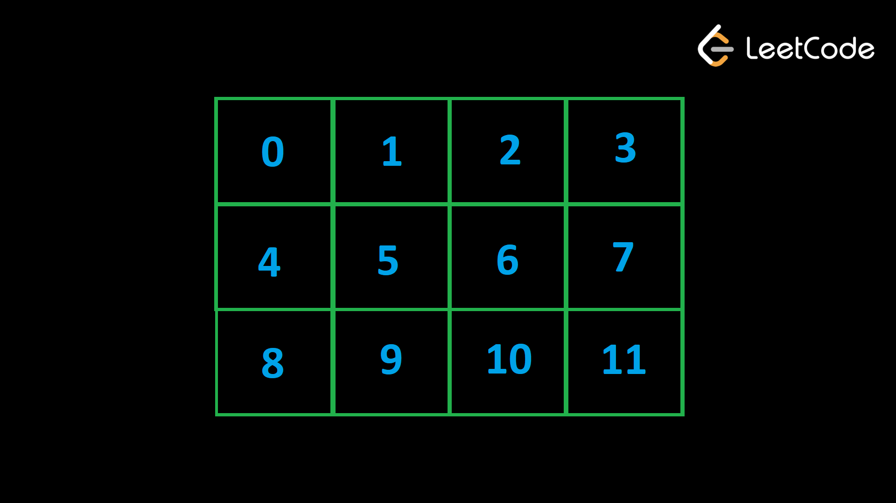

Бинарный поиск — это обычная оптимизация линейного сканирования при поиске индекса элемента или точки вставки, если он не существует. В этих задачах left и right границы представляют границы подмассива, который мы сейчас рассматриваем. mid представляет индекс середины текущего пространства поиска. Иногда вы будете напрямую искать ответ в двоичном формате. В других случаях двоичный поиск будет просто инструментом, ускоряющим ваш алгоритм. Давайте посмотрим на несколько примеров.
Примечание о реализации двоичного поиска:
Многие люди путаются при реализации бинарного поиска: как инициализировать правильную границу? Вы бежите,
когда left < right или left <= right? Вы обновляетесь с mid+1 или
mid? А что насчет mid - 1 или mid?
Наш совет: ознакомьтесь с шаблонами, представленными в главе «Интервью и инструменты». Решая
задачи, не размышляйте над деталями реализации, а просто копируйте шаблоны. Для
собеседований вы можете либо сохранить шаблоны в памяти, либо открыть их на другой вкладке
или на листе бумаги во время собеседования.
Example 1: 704. Binary Search
Вам дан массив целых чисел nums, отсортированный в порядке возрастания, и число
target. Если target
существует в nums, верните ее индекс. В противном случае верните -1.
Мы начнем с простого примера, показывающего реализацию кода. Решением грубой силы было бы выполнить линейное сканирование — просто проверьте каждый индекс. Это происходит в O(n), где n — длина входного массива. Поскольку массив отсортирован, мы можем использовать двоичный поиск, чтобы улучшить временную сложность. О(logn).
left = 0
right = len(nums) - 1
while left <= right:
mid = (left + right) // 2
num = nums[mid]
if num == target:
return mid
if num > target:
right = mid - 1
else:
left = mid + 1
return -1
Мы не используем никакого дополнительного пространства, за исключением нескольких целочисленных переменных.
Example 2: 74. Search a 2D Matrix
Напишите эффективный алгоритм, который ищет значение target в целочисленной matrix
размером m x n. Целые
числа в каждой строке сортируются слева направо. Первое целое число каждой строки больше последнего целого
числа предыдущей строки.
Поскольку каждая строка отсортирована и полностью меньше следующей строки, мы можем рассматривать матрицу как один массив. Этот гипотетический одиночный массив имеет длину m * n. Если мы рассмотрим индексы между [0, m * n — 1], то как нам найти строку и столбец, в которые преобразуется каждый индекс?
В каждой строке n элементов. Это означает, что строка 0 — это индексы [0, n — 1]. Строка 1 — это индексы [n, 2 * n — 1] и так далее. Это эквивалентно разделению n по этажам, иначе говоря, row = i // n — строка увеличивается каждые n индексов.
Столбец может находиться в диапазоне [0, n – 1]. Каждые n индексов столбец сбрасывается в 0. Это идеально подходит для оператора по модулю. col = i % n.
Затем мы можем просто выполнить двоичный поиск в этом гипотетическом единственном массиве. На следующем изображении показаны индексы этого гипотетического одиночного массива в 2d-матрице.

Нам нужно свести эту проблему к предыдущему примеру, чтобы мы могли применить тот же алгоритм двоичного поиска.
Допустим, есть n столбцов. В каждой строке n элементов. Первые n индексов принадлежат строке 0. Следующие n индексов принадлежат строке 1 и так далее.
Если элемент находится в row, то над ним в сетке находятся элементы row * n. Дан индекс i, мы можем найти строку, к которой он принадлежит, разделив на n. Например, на изображении индекс 9 принадлежит строке 2. В каждой строке содержится четыре элемента, и у нас есть 9/4 = 2. Это имеет смысл, поскольку над строкой 2 находится восемь элементов, поэтому индексы 8, 9, 10, 11 все принадлежат строке 2.
Чтобы найти столбец с индексом i, мы просто берем i % n. Индекс 0 принадлежит 0th столбцу, а затем каждые n индексов мы возвращаемся в 0th столбец. Индекс 1 принадлежит 1th столбцу, а затем каждые n индексов мы возвращаемся в 1th столбец. Поскольку каждый столбец разделен на n индексов, оператор модуля дает нам столбец.
Как только мы сможем преобразовать индекс i в (row, col), мы сможем рассматривать матрицу как обычный массив и выполнять по ней двоичный поиск, как мы это делали в предыдущем примере.
m, n = len(matrix), len(matrix[0])
left, right = 0, m * n - 1
while left <= right:
mid = (left + right) // 2
row = mid // n
col = mid % n
num = matrix[row][col]
if num == target:
return True
if num < target:
left = mid + 1
else:
right = mid - 1
return False
Потому что есть O(m⋅n) элементов, начальное пространство поиска имеет размер O(m⋅n), что означает, что этот алгоритм имеет временную сложность О(журнал(м⋅n)). Мы не используем никакого дополнительного пространства, за исключением нескольких целочисленных переменных.
Пример 3: 2300. Успешные
пары заклинаний и зелий.
Вам даны два массива положительных целых чисел, spells и potions, где
spells[i] представляют силу
ith заклинания и potions[j] представляют силу jth зелья. Вам также дается
целочисленный массив success. Пара заклинаний и зелий считается успешной, если произведение их
сильных сторон равно
success. Для каждого заклинания найдите, со сколькими зельями оно может сочетаться, чтобы
добиться успеха.
Вернуть целочисленный массив, в котором ith элемент является ответом на ith
заклинание.
Допустим, n = spells.length и m = potions.length. Подход грубой силы заключался бы в переборе всех пар и проверке того, какие из них имеют продукт, превышающий успех, что имеет временную сложность О(n⋅m).
Если заклинание имеет силу x, то оно образует успешную пару с любым зельем с силой не менее success / x. Если мы сортируем potions, то мы можем выполнить двоичный поиск по success / x, чтобы найти индекс точки вставки. Поскольку мы знаем длину potions, мы также знаем, сколько зелий имеют силу не менее success / x. Если i — точка вставки, то существует m — i зелий.
Допустим, мы сортируем зелья и имеем potions = [1, 2, 3, 4, 5] и success = 7.
У нас есть заклинание силой 3. Для формирования удачной пары нам нужно зелье силой не ниже 7 / 3=2,3333.
Если мы выполним двоичный поиск этого значения в potions, мы найдем индекс вставки, равный 2. Каждое зелье по этому индексу и справа может образовать успешную пару. Всего индексов 3 (зелья силой 3, 4, 5).
В общем случае, если имеется m зелий, окончательный индекс равен m - 1. Если индекс вставки равен i, то диапазон [i, m - 1] имеет размер (m - 1) - i + 1 = m - i.
Мы можем перебирать заклинания и для каждого заклинания выполнять бинарный поиск по success / spell, чтобы найти индекс вставки i, а затем использовать формулу, чтобы найти количество зелий, которые могут сформировать успешную пару.
def binary_search(arr, target):
left = 0
right = len(arr) - 1
while left <= right:
mid = (left + right) // 2
if arr[mid] < target:
left = mid + 1
else:
right = mid - 1
return left
potions.sort()
ans = []
m = len(potions)
for spell in spells:
i = binary_search(potions, success / spell)
ans.append(m - i)
return ans
Сортировка зелий стоит О(m⋅logm). Затем мы повторяем n раз, выполняя Бинарный поиск O(logm) на каждой итерации. Это дает нам временную сложность O((m+n)⋅logm), что намного быстрее, чем O(m⋅n), потому что логм небольшой. Поскольку мы сортируем входные данные, используется некоторое пространство в зависимости от алгоритма сортировки, используемого вашим языком.
Двоичный поиск в массиве — это простой инструмент, позволяющий значительно улучшить временную сложность алгоритма. Каждый раз, когда у вас есть отсортированный массив (или вы можете отсортировать его без каких-либо последствий), рассмотрите возможность использования двоичного поиска, чтобы быстро найти индекс вставки нужного элемента. Попробуйте выполнить следующие практические задачи, прежде чем переходить к следующему шаблону.